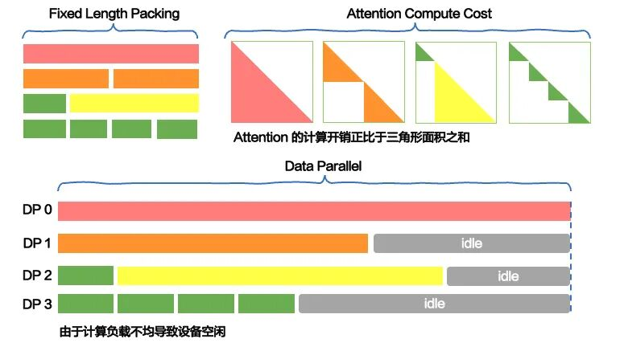
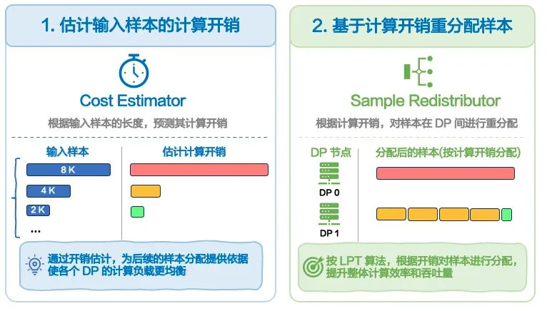
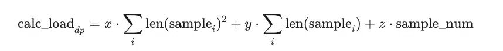
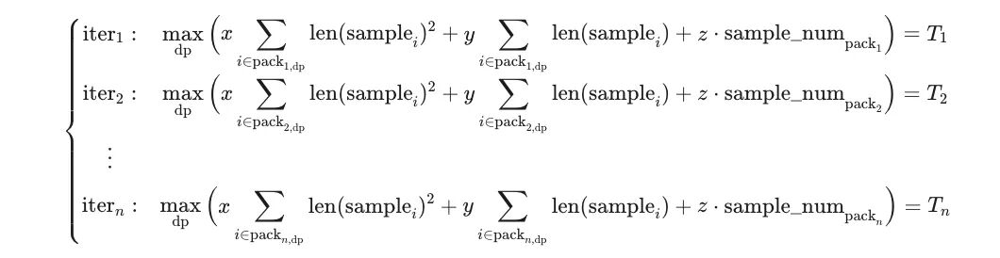
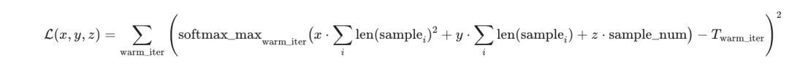
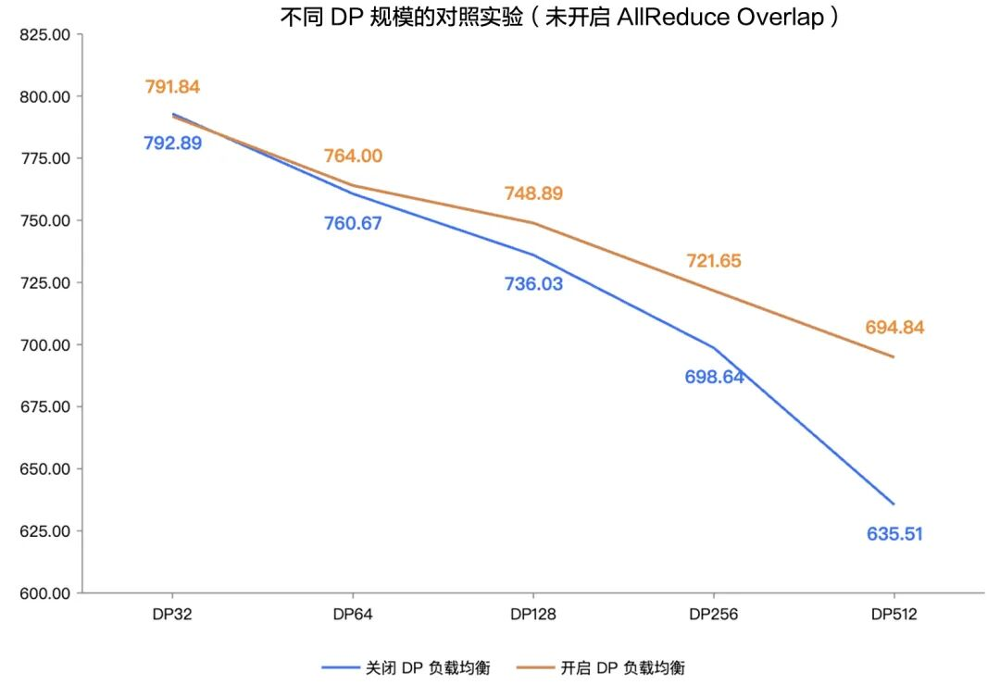

多模态模型训练加速，LoongForge 的 DP 负载均衡优化方案详解
官方网页地址：https://baidu-baige.github.io/LoongForge/
GitHub 地址：https://github.com/baidu-baige/LoongForge
1. 数据并行 DP 负载不均制约态模型训练整体效率
1.1. DP 梯度同步的性能瓶颈
当前大语言模型与多模态大模型训练，普遍采用数据并行（Data Parallel，DP）机制开展分布式并行训练，核心逻辑是将训练数据分发至各个计算节点，各节点独立完成模型前向传播与反向传播计算后，通过 AllReduce 等梯度同步操作完成全局参数统一更新。
因此，分布式训练整体吞吐效率与算力利用率，不仅依赖单节点 GPU 本身的计算性能，更高度取决于所有 DP 计算节点的计算进度一致性——分布式同步机制的特性决定了，任意单个节点的计算延迟都会在梯度同步阶段被全局放大，形成全员等待的冗余开销，直接拉低整体训练效率。
1.2. 固定长度 packing 策略的固有缺陷
为提升 GPU 算力利用率、规避序列 Padding 带来的无效冗余计算，工业界训练场景普遍采用 fixed-length packing 固定长度拼接策略，将不同原始长度的训练样本拼接组合，规整为统一固定长度(如 32K / 64K / 128K 等)的 pack 作为输入序列，以此实现各个 DP 节点训练 Token 总量一致，初步从 Token 数量维度实现基础负载均衡。
但该策略存在核心固有缺陷，无法适配 Transformer 模型的真实计算特性。 Transformer 架构的核心注意力机制（Attention）计算复杂度与序列样本长度呈二次方增长关系，这意味着即便两个 DP 节点处理的 Token 总数量完全相同，只要节点内样本长度分布存在差异，各节点的实际核心计算开销就会出现巨大差距，基础 Token 层面的负载均衡无法等同于真实计算负载均衡。
以 32K 固定 packing 长度的训练配置为例直观说明：DP 0 节点输入由 8 条长度 4K 的短样本拼接而成，DP 1 节点输入由 2 条长度 16K 的长样本拼接而成，两个节点处理的 Token 总数完全一致，模型线性计算模块的计算开销基本持平。
但受 Attention 二次方计算复杂度影响，DP 1 节点长序列样本的注意力计算开销被大幅放大，整体前向、反向传播计算耗时显著增加；而 DP 0 节点以短样本为主，Attention 计算压力极小，能够快速完成迭代计算。这就导致固定长度 packing 策略下，各 DP 节点仍存在严重的计算负载失衡问题，短样本节点快速完成计算后，需持续长时间等待长样本节点同步完成计算，全局等待开销持续叠加。

1.3. 多模态模型的 DP 负载不均难题
相较于纯文本大语言模型，多模态模型的训练负载均衡问题更为复杂棘手。多模态模型的训练数据由文本和图像数据构成，其中图像与视频模态本身就存在显著的负载不均问题。不同样本之间的图像分辨率差异会直接导致计算量的不一致，高分辨率图像通常会产生更多的 patch 或特征，从而带来更高的算力与显存开销。同时，每个样本中包含的图片张数也可能不同，多图样本相比单图样本在编码阶段计算成本更高。此外，在视频数据中，不同样本的帧数分布往往高度不均，长视频（帧数多）会显著拉长前向和反向传播时间，而短视频则计算开销较小。
对于多模态模型，图像分辨率、图片张数以及视频帧数存在分布差异，因此除 LLM 文本解码器主干网络需要保障 DP 维度负载均衡外，视觉编码器（ViT Encoder）的图像、视频特征处理环节也存在独立的计算负载差异问题，双重模块负载不均进一步加剧分布式训练瓶颈。
综上，亟需搭建贴合 Transformer 及多模态模型真实计算特性的负载建模体系，配套精细化自适应数据分配调度方案，从根源上解决 DP 负载不均问题，削减同步等待冗余开销，最大化提升分布式训练整体效率与算力利用率。
2. 核心优化方法：基于计算开销精准建模的自适应数据重分配方案
解决 DP 训练负载不均的核心核心逻辑清晰明确：精准量化建模单个样本及样本组合的真实计算开销，以实测计算开销数据为核心依据，动态调度分配各 DP 节点的训练样本，实现所有 DP 节点真实计算负载均等化，彻底消除节点间计算进度差异带来的同步等待损耗。
但该优化思路在实际工程落地过程中，面临两大核心关键挑战，直接决定 DP 负载均衡优化的实际效果与实用性。
2.1. 落地核心关键挑战
第一，计算开销建模的精准性难以保障。模型整体训练计算开销由两类特性截然不同的模块共同构成：Attention 注意力模块具备非线性二次复杂度特征，前馈网络等基础模块近似线性计算复杂度。若开销建模无法同时兼顾非线性与线性双重计算特性，就无法精准拟合不同长短样本组合下各 DP 节点的真实计算成本。即便后续执行数据样本重排调度，也无法达到预期负载均衡效果，甚至会新增额外负载偏差，得不偿失。
第二，数据重分配的额外系统开销难以管控。样本重排、packing 结构重构、跨节点数据交互调度等操作，都会带来额外的系统与通信开销。若优化策略本身的附加开销过高，将直接抵消负载均衡带来的训练效率提升收益，甚至反向拖累整体训练吞吐性能。因此，必须设计轻量化、低损耗的智能数据调度重排策略，在保证负载均衡优化效果的前提下，把额外系统开销控制在合理可接受范围内。
2.2. LoongForge DP 负载均衡方案设计思路
针对上述两大核心挑战，百度百舸全模态训练框架 LoongForge 量身打造了适配 Transformer 架构及多模态模型计算特性的 DP 负载均衡方案，通过自适应数据重排优化方法，在单次训练迭代（iteration）内完成跨 DP 节点样本精细化重分配，实现全维度计算负载均衡。
整体优化流程分为两大核心阶段，全程嵌入原生训练流程、无需离线预处理：

2.2.1. 热身建模阶段：构建精准计算开销模型
通过在线实时性能探测机制，在不干扰正常训练流程的前提下，动态采集各DP节点的真实计算执行耗时、样本长度等关键特征数据，并据此自适应地构建与模型计算特性相匹配的DP级开销估计模型。该过程全程自动化执行，无需人工参数调优与干预。
所构建的模型能够随训练环境与负载特性的变化持续自适应调整，具备良好的通用性，可适配不同模型架构、训练配置及硬件平台。
首先，对 DP 节点的计算负载进行如下形式的建模：

其中：
-
第一项刻画 Attention 的二次复杂度开销；
-
第二项刻画线性层及通信相关的线性开销；
-
第三项刻画固定的 kernel launch 开销；
-
x、y、z 为待求解系数，其具体取值由模型架构、训练配置及硬件平台等因素共同决定，并在热身阶段通过在线数据自适应估计得到。
在热身阶段的 n 个 iteration 后，可以得到如下方程组：

上述建模过程试图通过一组 iteration 级别的观测数据，反推出 sample 负载模型中的参数 x，y，z。由于不同 iteration 中触发 max 的 DP Rank 可能发生切换，整体目标函数在参数空间中呈现出高度非连续的分段结构。这使得直接枚举或解析求解所有可能的 max 组合在计算上不可行。基于上述原因，引入 softmax 对 max 运算进行可微近似，将原问题转化为连续、可微的优化形式，并结合最小二乘法在数值意义下对模型参数进行求解。
具体地，定义整体损失函数为：

目标是求解非负约束下的最优参数：
基于上述方法，可采用迭代方式求解最优参数。该过程仅在热身阶段结束后触发一次，因此对整体训练效率的影响可以忽略不计。
2.2.2. 在线自适应重分配阶段：动态抹平节点负载差
在求解出最优参数后，基于热身阶段训练完成的计算开销模型，实时评估各个 DP 上待训练样本的计算压力，动态完成跨 DP 节点样本自适应重分配调度。其核心优化目标为最小化所有 DP 节点单迭代最大总计算开销，抹平节点间计算耗时差异，大幅削减梯度同步阶段的全局等待开销。
该方法支持开箱即用，全面支持 InternVL、Qwen2-VL/2.5-VL/3-VL 等主流多模态模型，覆盖图像、视频全多模态训练场景，兼容模型动态分辨率处理逻辑；仅基于原生 Data Parallel 数据并行实现优化，与张量并行、流水线并行等主流分布式训练策略互不干扰、协同兼容，可直接适配现有训练架构；无需修改模型训练代码，仅通过简单命令行参数即可一键启用优化能力，配套自动热身建模流程，无需人工配置与离线预处理，快速落地生效。
该方法具备 4 大核心特性：
-
同时适配 LLM 文本解码器与 ViT 视觉编码器，实现多模态双重负载均衡优化；
-
支持跨微批次负载持续追踪，达成迭代级全局负载均衡，而非单批次局部优化；
-
内置智能重分配触发机制，自动跳过无效重排操作，避免无效通信与调度资源浪费；
-
采用异步流水线核心设计，数据重排开销完全隐藏，零额外训练时延增量。
2.3. 4 大核心特征
2.3.1. ViT 视觉编码器专属负载均衡优化
针对多模态模型训练的特有需求，LoongForge 在优化 LLM 文本解码器负载均衡的基础上，进一步为 ViT 视觉编码器设计了定制化负载均衡方案。相比文本序列的 Attention 计算，ViT 在处理图像与视频像素数据时，其计算模式与负载特性存在显著差异，因此需要进行独立建模与调度优化。
该方案在 ViT 编码器的输入侧与输出侧同步实施数据重分配与调度机制，确保视觉特征能够被精准路由至对应的 DP 节点，从而实现视觉特征与 LLM 文本嵌入的高效对齐，最终完成覆盖多模态双模块的全维度负载均衡。
此外，ViT 编码器与 LLM 主干的负载均衡策略相互解耦，支持独立启用或协同开启，能够灵活适配不同训练场景与性能优化需求。
2.3.2. 跨微批次负载追踪：实现迭代级全局均衡
在启用梯度累积（Gradient Accumulation）的训练设置下，一个完整迭代（iteration）由多个微批次（micro-batch）顺序执行并共享一次参数更新。此时，简单的基于单微批次的数据重分配策略仅能实现局部负载均衡，容易导致跨微批次维度上的累积负载偏斜，难以反映和优化完整迭代周期内的真实负载分布。
为此，LoongForge 引入跨微批次的负载追踪与调度机制。在梯度累积过程中，系统通过各 DP 节点专属的负载追踪器持续记录微批次的累积计算负载，从全局视角刻画整轮迭代的负载变化趋势，并据此进行动态调度与重分配。该机制将负载均衡目标从「单微批次局部优化」升级为「跨微批次全周期优化」，有效消除梯度累积带来的负载波动与偏斜问题。
2.3.3. 动态智能触发机制：规避无效重排资源浪费
系统无需每次迭代都执行数据重分配操作，内置双重判定条件智能触发优化，精准规避无效调度带来的资源损耗：
一是单样本主导检测，若单个样本计算负载已超过 DP 节点平均负载阈值，重分配操作无法改善整体负载状态，自动跳过重分配流程；
二是负载不均衡度检测，仅当全局最大 DP 负载与平均 DP 负载的差值比例超过设定阈值时，才启动数据重分配优化。同时系统自动统计记录重分配跳过及执行次数，便于运维实时监控优化效果与负载状态。
2.3.4. 异步重排流水线机制：零额外训练时延隐藏系统开销
为从根源上规避数据重分配带来的系统与通信损耗，LoongForge 将数据重排逻辑部署至 DataLoader 的 pin_memory 独立工作线程，依托 Gloo 后端 all_to_all 通信算子完成跨 DP 节点高效数据交互，实现数据重排与 GPU 模型计算异步并行执行。
该机制构建高效流水线协同逻辑：训练主线程执行第 N 个批次的前向、反向 GPU 计算任务时，pin_memory 独立线程同步并行完成第 N+1 个批次的数据重排、样本重构与数据预加载准备工作。只要数据重排调度耗时小于对应批次 GPU 模型计算耗时，下一批次训练所需数据即可提前就绪待命，数据重排带来的所有额外系统开销被完全流水线隐藏，端到端训练全程无额外时延增加。
3. 实验验证：大规模分布式训练 DP 负载均衡优化性能收益显著
在固定未开启 All-Reduce 通信重叠优化的实验条件下，针对不同 DP 并行规模开展对照实验。
- 在没有开启 DP 负载均衡机制前：
随着并行规模从 DP32 扩展至 DP512，模型训练整体吞吐性能（TGS）持续下降。
其中，在 DP256 向 DP512 扩展阶段，性能退化尤为显著，呈现出加速下降的趋势。究其核心原因，在于大规模分布式训练场景下，DP 节点数量增多使得样本长度分布引入的计算负载不均问题被持续放大，在梯度同步阶段形成严重的全局等待瓶颈，进而成为制约 DP 规模扩展、造成训练吞吐性能显著劣化的关键因素。
- 在开启 LoongForge DP 负载均衡机制后：
上述性能衰减趋势得到显著缓解。在所有 DP 并行规模下，训练吞吐水平均明显提升，且并行规模越大，优化收益越显著：在 DP256 规模下性能提升约 3.3%，在 DP512 超大规模场景下性能提升接近 10%。

3.1. 实验结论：有效破解超大规模 DP 训练瓶颈
实验结果表明，LoongForge 的 DP 负载均衡，通过对计算负载进行精细化建模并实施自适应动态数据重分配，从根本上缓解了负载不均问题，显著减少梯度同步阶段的无效等待时间，整体提升分布式训练吞吐率及 GPU 资源利用效率，尤其适用于超大规模集群训练场景。